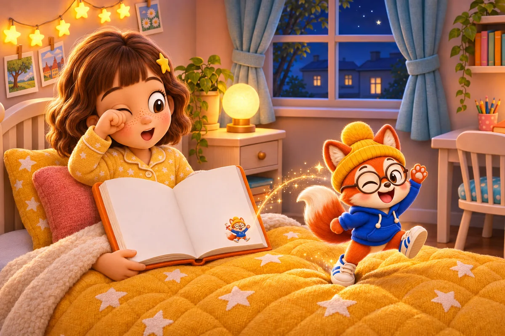

Adım 2 / 18
Sayfadan çıkan tilkiKuş mu, Top mu?
Adım 2 / 18
Sayfadan çıkan tilkiKuş mu, Top mu?
💧 0 / 20

🎒 Hazırlık · Okumadan önce
Başlık: Sayfadan çıkan tilki
Resme ve başlığa bak. Bu bir soru değil, sadece bir tahmin. Puan yok.
Sence bu sayfada ne olacak?
Güzel tahmin! Hadi okuyup bakalım.
2. Sayfadan çıkan tilki
O gece Duru yatağına uzanıp kitabı açtı.
Sayfalar bembeyazdı, yalnızca köşede o tilki vardı.
Birden tilki ona göz kırptı.
Sonra sayfadan zıplayıp yorganın üstüne kondu.
“Merhaba Duru, ben Mino!” dedi.
Duru gözlerini ovuşturdu: “Kitaplar konuşur mu ki?”
1Gerçek mi, hayal mi?
Bu olay gerçekten olabilir mi, yoksa hayal mi?
Her cümleyi oku ve seç.
2Ne demek?
Doğru resme dokun!
3Yaz!
Kitaptan çıkan tilkinin adını harflerle yaz.
Harflere dokun, kutulara yerleşsin.
Aferin! Adım 2 tamam!
0/ 20 damla 💧
Dur bakalım!
Tahmin et, sonra dinleyip görelim. Puan yok.